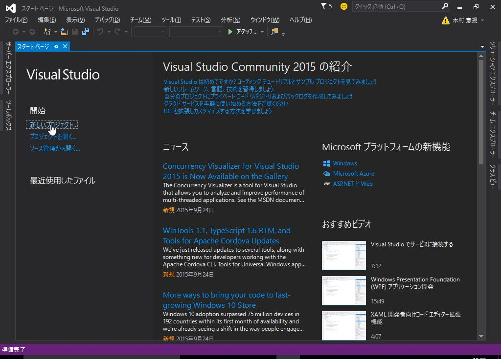
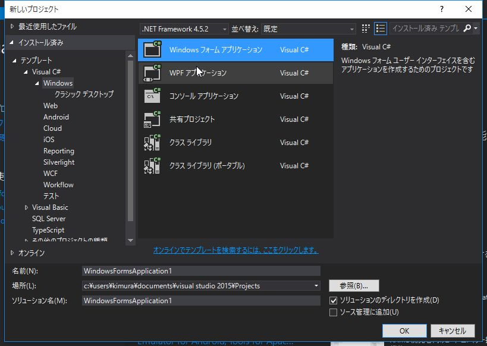
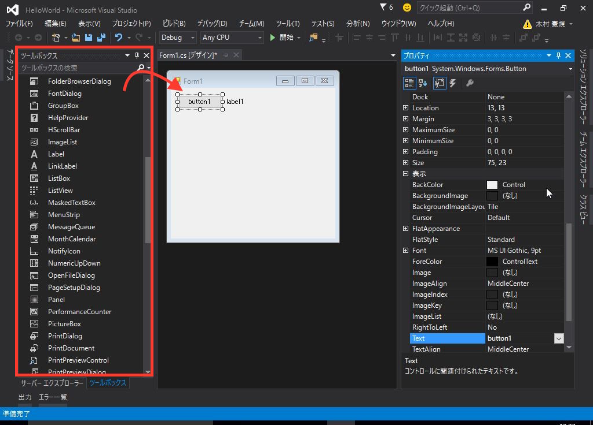
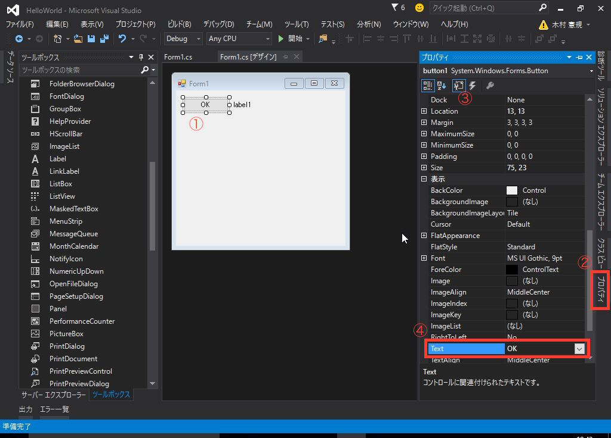
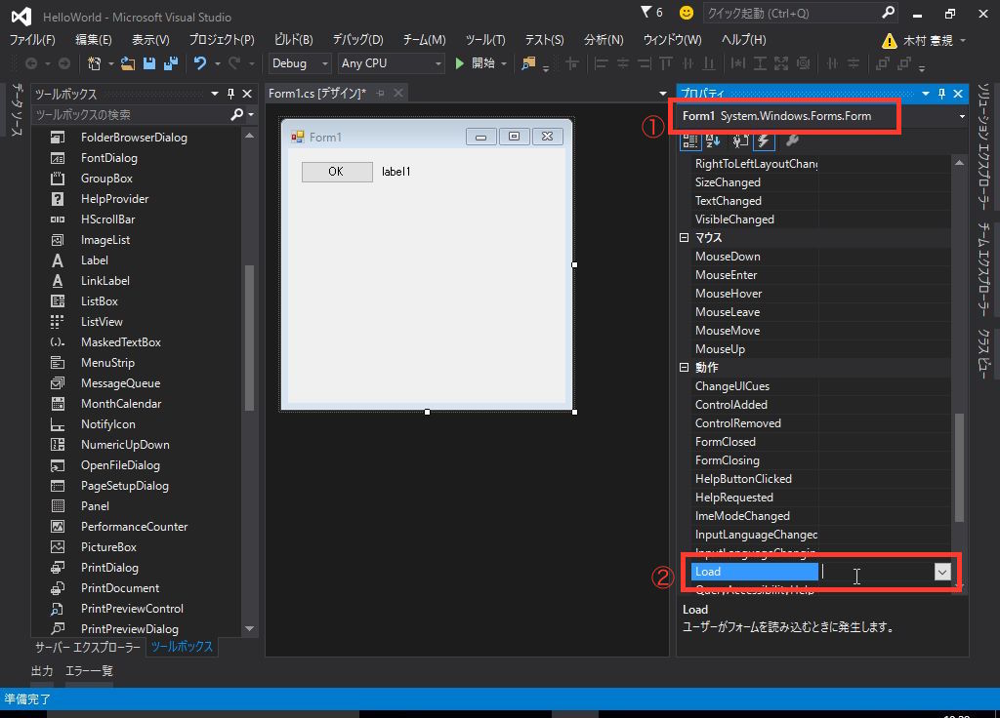
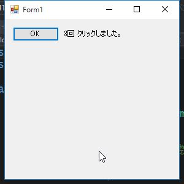

単純にクリック回数をカウントするアプリの作成を通して、 Visual Studio の基本的な 操作方法について解説します。

Windowsフォームアプリケーション を選択します。

名前は HelloWorld とします。
ツール ボックス から Button と Label をドラッグしてフォームに配置します。

配置したボタンを選択した状態で、 プロパティ を表示します。
Text を OK に変更します。

フォームを読み込んだ際の初期化処理のイベントを割り当てます。
フォームを選択した状態で、 プロパティ を表示します。
雷のアイコンをクリックしてイベントを表示し、 Load にフォーカスを合わせて ダブルクリックするか、Enterを押します。

同じように、ボタンをクリックした際のイベントを割り当てます。
ボタンを選択した状態で、プロパティ を表示し Click にフォーカスを合わせてダブルクリックします。
イベント割り当てを行った時に Form1.cs が表示されていると思います。
まだ表示されていない場合は、フォームを右クリックして コードの表示 を選択します。
using System;
using System.Windows.Forms;
namespace HelloWorld
{
public partial class Form1 : Form
{
/// <summary>
/// ボタンのクリック回数
/// </summary>
int count;
public Form1()
{
InitializeComponent();
}
/// <summary>
/// 初期化処理
/// </summary>
/// <param name="sender"></param>
/// <param name="e"></param>
private void Form1_Load(object sender, EventArgs e)
{
this.count = 0;
this.UpdateLabel();
}
/// <summary>
/// ボタンのクリック回数を集計
/// </summary>
/// <param name="sender"></param>
/// <param name="e"></param>
private void button1_Click(object sender, EventArgs e)
{
this.count++;
this.UpdateLabel();
}
/// <summary>
/// ラベルにクリック回数をセットする
/// </summary>
private void UpdateLabel()
{
this.label1.Text = string.Format("{0}回 クリックしました。", this.count);
}
}
}
Form1 のプロパティとして、ボタンのクリック回数を保持するための count 変数を定義しています。
Form1_Load はフォームが読み込まれる際に実行されるメソッドです。
そこで count 変数の初期化と ラベルの表示内容の設定を行っています。
button1_Click はボタンのクリック時に実行されるメソッドです。
クリックされる度に count をインクリメントし、ラベルの表示内容を更新しています。
開始ボタンをクリックするか、F5キーを押してデバッグ実行してみてください。

非常に簡単なWindowsフォーム アプリケーションの作り方について解説しました。